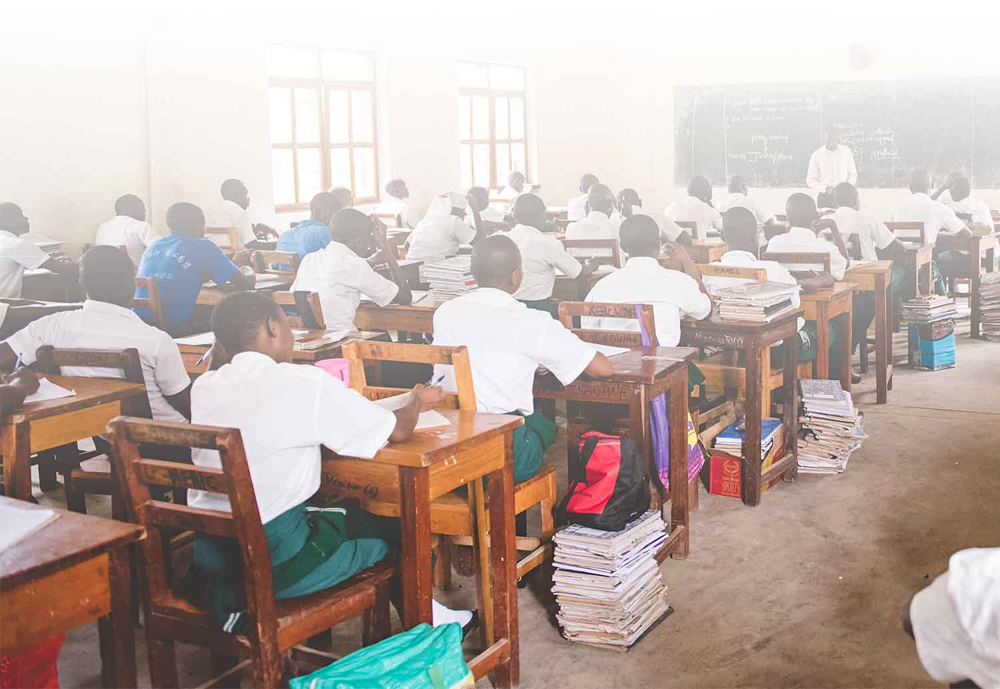
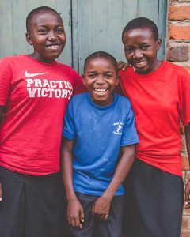
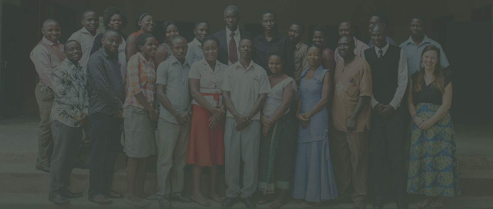
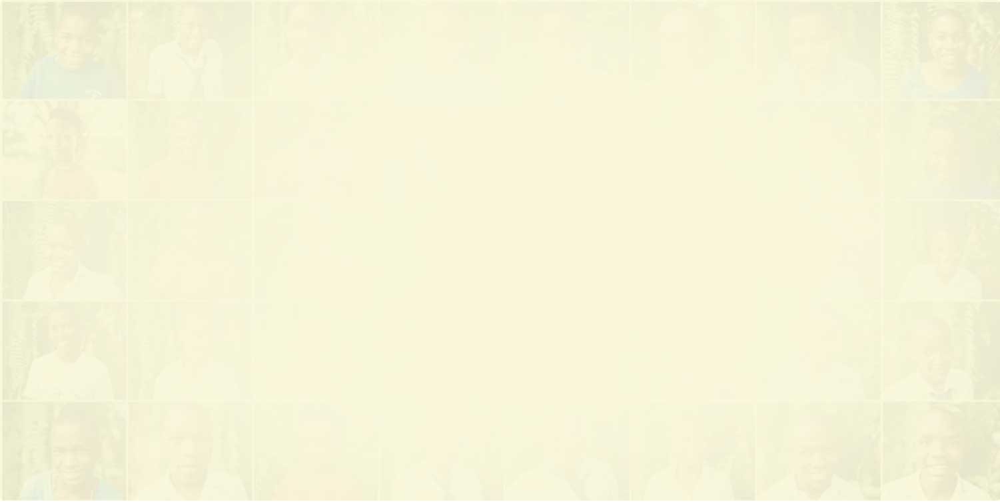
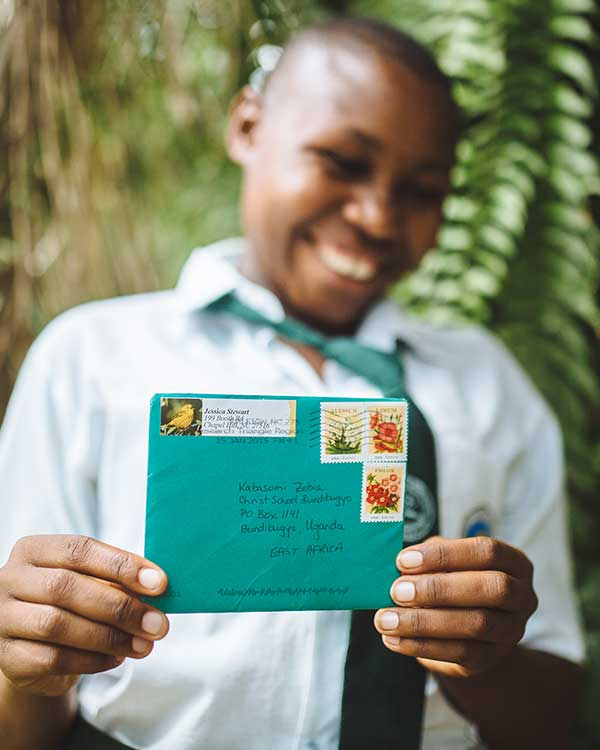
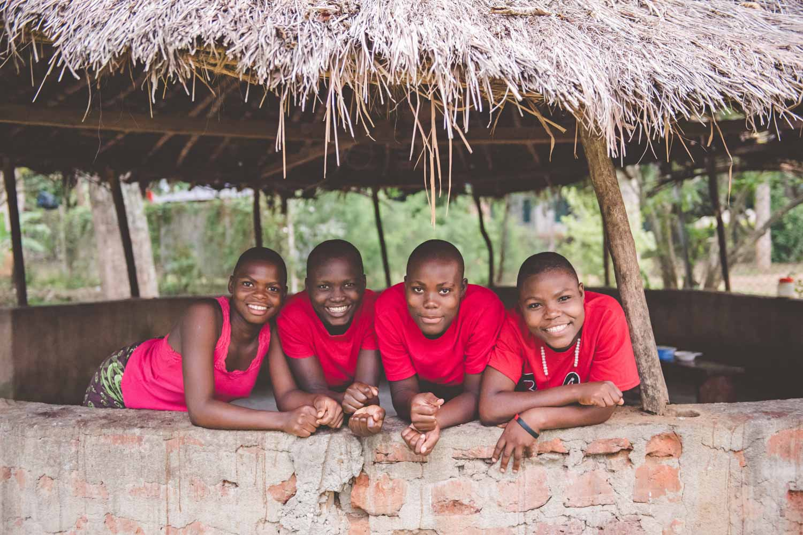
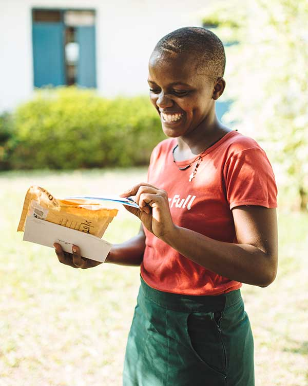
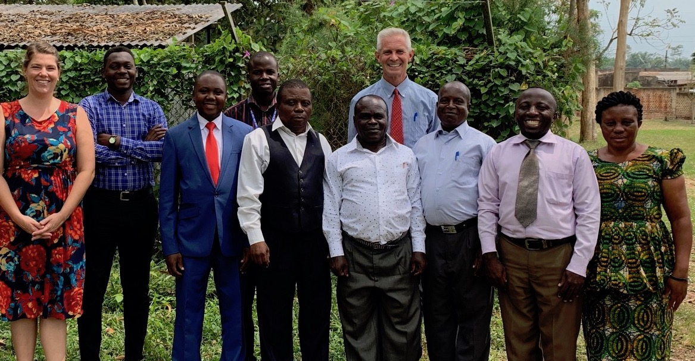

From national exam results to transformed lives — discover the achievements that show CSB's purpose in action.
Each story below represents the real-world impact of education grounded in excellence and faith.

InfrastructureA 10-room permanent classroom block completed in 2023, funded through community partnerships, providing modern, well-lit learning spaces for over 300 students.

AcademicsRenovation and re-equipping of the biology and chemistry lab with new microscopes, reagents, and safety equipment — directly improving A-Level science results.

Staff DevelopmentCSB hosted a two-week training workshop for 35 teachers from six schools across Bundibugyo District, sharing best practices in pedagogy and classroom management.

Spiritual LifeThe school chapel was expanded to hold the full student body for daily worship and Sunday services, with new seating, a sound system, and a dedicated prayer room.
CSB's football team claimed the Bundibugyo District Secondary Schools Championship for the third consecutive year, with 22 students representing the school.

AlumniOver 50 CSB alumni are now practising doctors, nurses, engineers, and teachers serving in Bundibugyo and across Uganda — a direct result of CSB's A-Level science focus.

ResourcesA full library renovation added 1,200 new books through an international book drive, providing students with rich resources for research and leisure reading.

TechnologyA 20-station computer laboratory was established, offering Computer Technology as a subject for both O-Level and A-Level students, bridging the digital divide in western Uganda.

GovernanceCSB's Board of Governors was restructured in 2019 to ensure a majority of Ugandan representation — government officials, church leaders, and business professionals guiding the school's future.
Amanya Moses grew up in a small village on the edge of Bundibugyo District. His parents were subsistence farmers who had never attended secondary school.
When Moses enrolled at CSB on a partial bursary, his biology teacher — a proud CSB alumnus himself — recognised his potential and gave him extra coaching. Moses went on to score distinctions in his A-Level examinations and was admitted to Makerere University School of Medicine.
Today, Dr. Moses Amanya works as a medical officer in Fort Portal. He returns to CSB each year to mentor current students and recently established a small scholarship fund for O-Level students in financial need.
"CSB didn't just educate me. It believed in me before I believed in myself."
Support a student's journey, sponsor a project, or simply reach out to learn more about CSB.
Get In Touch